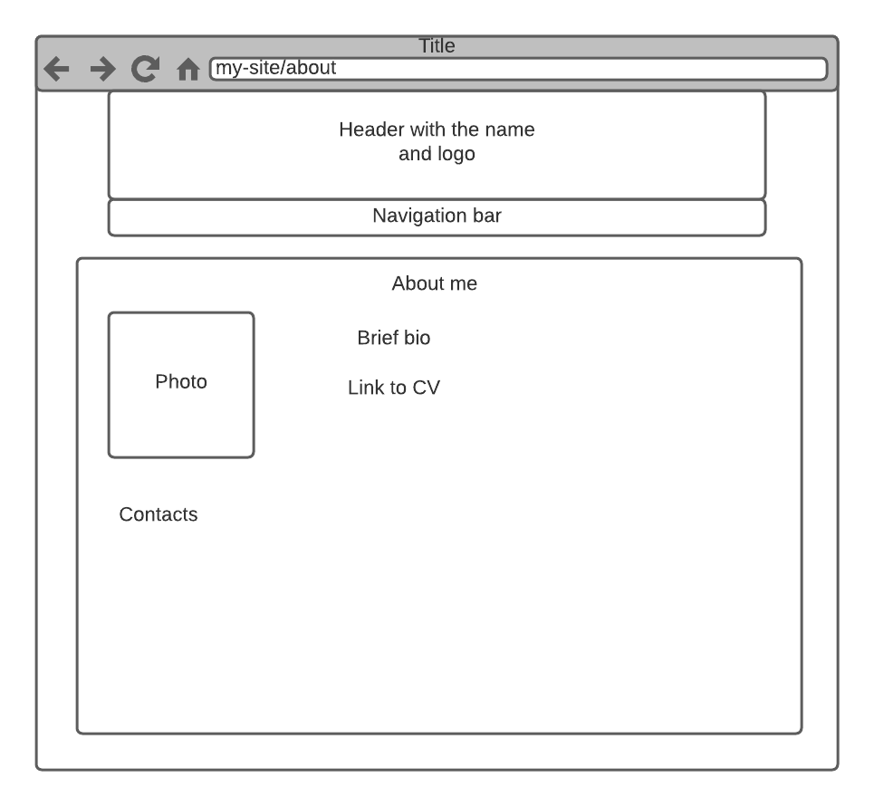
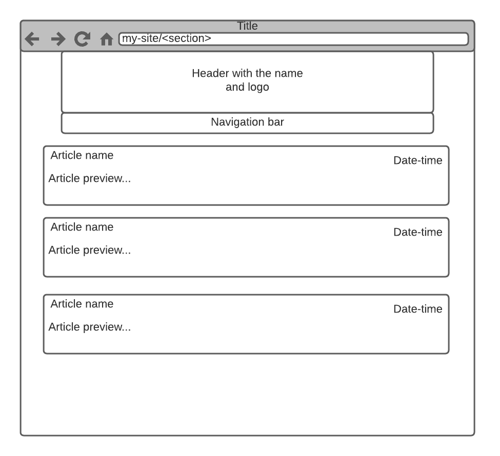

Report: Large Coursework
DANIIL BASTRICH
About
This site is sort of personal portal with articles and materials I've created during my life and would like to share
with other people.
My inspirations
-
Desire to share life-hacks, solutions to technical problems from my experience and other stuff like that with as
many people as possible
-
I want my thoughts and ideas to be heard by other people, want to have some platform serving that purpose. This
site
may be such instrument
-
Sites of my colleagues or other technical experts where they share their experience (e.g.
http://yurkins-workshop.ru/
or https://eax.me/)
Ways to access my site
- Desktop Web
- Desktop Web with browser accessibility features (like Text To Speech)
- Mobile Web
What did I consider when thinking about usability of my site
-
It should have calm and pleasant color scheme. Visitors shouldn't feel uncomfortable when browsing the site
-
Design in the whole should be minimalistic, shouldn't have a lot of details, so visitors brain won't be
overloaded
-
Navigation should be as simple and straightforward as possible
What did I have to learn/find out when creating my site
-
Modern CSS features like Flexbox and Grid Layout. I've been learning CSS about 10 years ago, and I was surprised
now
when met those new great and much more comfortable features than using float
-
Mustache JS - nice and useful template engine. It allows getting started fast and provides more than enough
options
for my project. Mostly I used official documentation from their Github page
-
Dived a bit deeper to semantic HTML layout. Thought that was a deprecated approach, but looks like it's still
alive
and used in many modern web-sites
What worked well
As I already had technical experience in web development, many tasks were easier for me and took less time. Using and
debugging CSS, integration of JS template library were smooth enough. And I didn't have any long blockers or problems I
couldn't resolve.
What can be improved
For me the main aspect that can be improved is discipline and planning. I had some plan in the head about a month before
deadline. But it was a little abstract, without concrete steps and milestones.
Finally, I came up with the solution, but it was under deadline pressure, and could be much better if I started earlier
and had more or less detailed plan.
Used resources
-
Jan Lehnardt, 'Mustache JS', 2021. [Online].
https://github.com/janl/mustache.js/. [Accessed: 05-Aug-2021
- 10-Sep-2021]
-
Mozilla, 'CSS Reference', 2021. [Online].
https://developer.mozilla.org/en-US/docs/Web/CSS/Reference.
[Accessed: 05-Aug-2021 - 10-Sep-2021]
-
Mozilla, 'HTML: HyperText Markup Language', 2021. [Online].
https://developer.mozilla.org/en-US/docs/Web/HTML.
[Accessed: 05-Aug-2021 - 10-Sep-2021]
-
Mozilla, 'JavaScript', 2021. [Online].
https://developer.mozilla.org/en-US/docs/Web/JavaScript.
[Accessed: 05-Aug-2021 - 10-Sep-2021]
Appendices
Appendix A - Site Map
Appendix B - Wireframes
About (Index) page

Articles list page

Article page